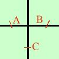

Da notare che se in una funzione non trascendente y=f(x) manca il termine noto, allora la funzione passa per l'origine Un esempio chiarira' meglio il concetto: considero la funzione y = x2 - 4 Cerco le intersezioni con gli assi Faccio il sistema tra la funzione e l'asse delle x  y = x2 - 4
y = x2 - 4y = 0
x2 - 4 = 0y = 0
x = y = 0 ho due punti di intersezione con l'asse delle x: A( -2 , 0) B( 2 , 0) Faccio il sistema tra la funzione e l'asse delle y
y = x2 - 4x = 0 poiche' ad x sostituisco zero la y sara' sempre uguale al temine noto
y = - 4x = 0  Il punto di intersezione con l'asse y e' C( 0 , -4 ) sul grafico a destra sono riportati i punti di intersezione |

|

|

|

|